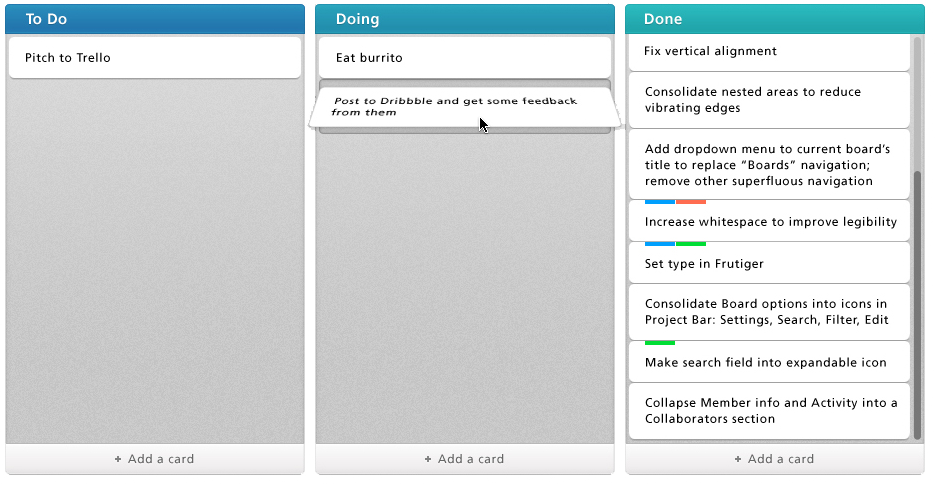

<element name="gantt-event" attributes="message duration start projectStart secondsPerPixel">

    <template>

        <style>
            @host {
              * {
                -webkit-touch-callout: none;
                -webkit-user-select: none;
                -khtml-user-select: none;
                -moz-user-select: none;
                -ms-user-select: none;
                user-select: none;
                display: block;

              }
            }

            #ganttrow {
                padding: 5px 0;
                margin: 5px 0;
                border-bottom:1px solid #eee;

            }

            #thumb {
                background-color: #3498db;
                padding-bottom: 12px;
                padding-top: 13px;
                border-radius: 6px;
                vertical-align: middle;
                text-align: center;
                font: 16.5px/1.231 "Lato", sans-serif;
                color: white;
                font-weight: bold;
                height: 20px;
                overflow: hidden;
                display: inline-block;
                cursor: auto;
                position: relative;
                padding-left: 0;
                padding-right: 0;
                min-width: 20px;
            }

            .plus {
                position: absolute;
                height:100%;
                vertical-align: middle;
                width: 10px;
                left:10px;
               
            }

            .handle {
                position: absolute;
                top: 0;
                bottom: 0;
                width: 10px;
                cursor: pointer;
            }

            #resizeHandle {
                //background-color: yellow;
                right: 0px;
            }

            #modifyStartHandle {
                //background-color: red;
                left: 0px;
            }

             #resizeHandle:hover {
                background-color: white;
                opacity: 0.4;
                border-radius: 6px;
            }

            #modifyStartHandle:hover {
                background-color: white;
                opacity: 0.4;
                border-radius: 6px;
            }
        </style>
        <div id="ganttrow">
            <div id="thumb" on-trackstart="trackStart" on-track="track"
                 on-trackend="trackEnd" >
                <div id="modifyStartHandle" class="handle" on-trackstart="trackStart" on-track="track"
                     on-trackend="trackEnd"></div>
                      <div id="plus" class="plus" on-trackstart="showcards" style="cursor:pointer">+</div>
                        {{messagecalculated}}
                <div id="resizeHandle" class="handle" on-trackstart="trackStart" on-track="track" on-trackend="trackEnd"></div>
            </div>
        </div>
        <div id="trello" on-trackstart="hidecards" style="background:white;padding:25px;border-radius:5px;display:none;position: fixed;top: 10%;left: 10%;z-index:100000;"></div>
    </template>

    <script>
        Polymer.register(this, {
            message: '',
            duration: 500,
            start: 0,
            messagecalculated: '',
            state: null, // null, 'beingResized', 'startBeingModified' or 'beingMoved'
            zoom: 1.0,
            secondsPerPixel: 864, // show 1 day as 100px when zoom is 1.0
            projectStart: moment().startOf('month').unix(),
            
            ready: function ()
            {
                this.$.resizeHandle.setAttribute('touch-action', 'pan-y');
                this.$.modifyStartHandle.setAttribute('touch-action', 'pan-y');
                this.$.thumb.setAttribute('touch-action', 'pan-y');
                this.durationChanged();
            },

            messageChanged: function () 
            {
                this.docalc();
            },

            showcards: function (e)
            {
                //this.send('showtrello');
                this.$.trello.style.display = "block";
            },
            hidecards: function (e)
            {
                //this.send('showtrello');
                this.$.trello.style.display = "none";
            },
            docalc: function () 
            {
                this.messagecalculated = this.message + "";
            },

            durationChanged: function ()
            {
                this.$.thumb.style.width = this.convertDurationToCssWidth(this.duration);
            },

            convertDurationToCssWidth: function (duration)
            {
                return this.applyZoom(duration) + "px";
            },

            startChanged: function ()
            {
                this.$.thumb.style.left = this.convertStartToCssLeft(this.start);
            },

            convertStartToCssLeft: function (startValue)
            {
                return (this.applyZoom(startValue - this.projectStart)) + "px";
            },

            applyZoom: function (value, reverse)
            {
                if (reverse)
                    return value / this.zoom * this.secondsPerPixel;
                return value * this.zoom / this.secondsPerPixel;
            },

            zoomChanged: function ()
            {
                this.startChanged();
                this.durationChanged();
                this.panStartChanged();
            },

            trackStart: function (e)
            {
                if (e.target == this.$.resizeHandle) {
                    this.state = 'beingResized';
                    this.$.resizeHandle.style.cursor = 'e-resize';
                    this.oldDuration = this.duration;
                }
                else if (e.target == this.$.modifyStartHandle) {
                    this.state = 'startBeingModified';
                    this.$.modifyStartHandle.style.cursor = 'w-resize';
                    this.oldStart = this.start;
                    this.oldDuration = this.duration;
                } else if (e.target == this.$.thumb) {
                    this.state = 'beingMoved';
                    this.$.thumb.style.cursor = 'move';
                    this.oldStart = this.start;
                }
            },

            track: function (e)
            {
                if (this.state == 'beingResized') {
                    this.$.thumb.style.width = this.convertDurationToCssWidth(this.newDuration = (this.oldDuration + this.applyZoom(e.dx, true)));
                } else if (this.state == 'startBeingModified') {
                    this.$.thumb.style.left = this.convertStartToCssLeft(this.newStart = (this.oldStart + this.applyZoom(e.dx, true)));
                    this.$.thumb.style.width = this.convertDurationToCssWidth(this.newDuration = (this.oldDuration - this.applyZoom(e.dx, true)));
                } else if (this.state == 'beingMoved') {
                    this.$.thumb.style.left = this.convertStartToCssLeft(this.newStart = (this.oldStart + this.applyZoom(e.dx, true)));
                }
            },

            trackEnd: function ()
            {
                if (this.state == 'beingResized') {
                    this.$.resizeHandle.style.cursor = null;
                    this.duration = this.newDuration;
                    delete this.oldDuration, this.newDuration;
                    this.state = null;
                } else if (this.state == 'startBeingModified') {
                    this.$.modifyStartHandle.style.cursor = null;
                    this.start = this.newStart;
                    this.duration = this.newDuration;
                    delete this.oldStart, this.newStart;
                    delete this.oldDuration, this.newDuration;
                    this.state = null;
                } else if (this.state == 'beingMoved') {
                    this.$.thumb.style.cursor = null;
                    this.start = this.newStart;
                    delete this.oldStart, this.newStart;
                    this.state = null;
                }
                // make valueChanged calls immediately
                dirtyCheck();
            },

            projectStartChanged: function ()
            {
                this.$.thumb.style.left = this.convertStartToCssLeft(this.start);
            },

            secondsPerPixelChanged: function ()
            {
                console.warn('TODO');
            }
        });
    </script>
</element>